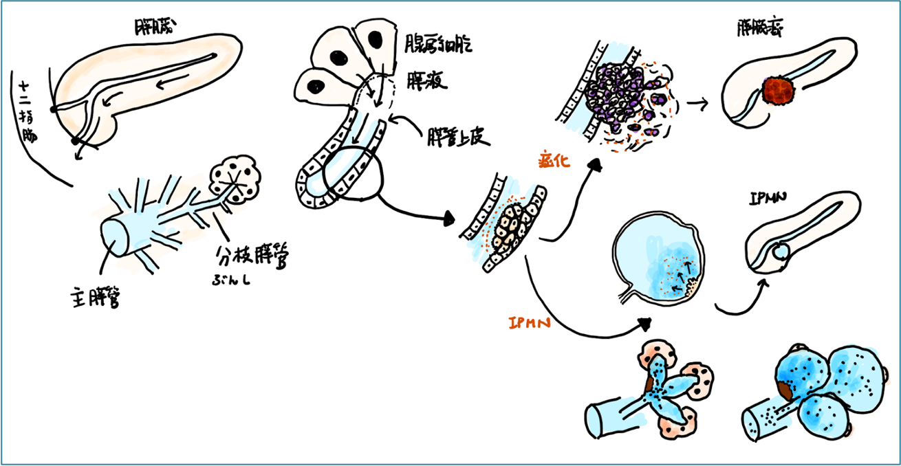

IPMNの一般的な知識
Surveillance evidence- 1）日本膵臓学会IPMN前向き多施設観察研究：10mm以上の主膵管と連続する嚢胞を持つ患者さんを、造影CTとEUS/MRIを半年ごとに繰り返す研究で、BD-IPMN 2104例を5年間追跡した大規模研究です。BD-IPMN自体の進展は348例（16.5%）、高度異形成（＝早期膵癌）/浸潤癌への累積発生は約5.17年で1.90%。BD-IPMN由来HGD/浸潤癌の予測因子は、嚢胞径、主膵管径、壁在結節でした。IPMNとは別に発生する併存膵癌の累積発生も2.11%で、IPMN由来癌と同程度。併存膵癌では男性・高齢が関連し、IPMN嚢胞径だけでは予測しにくいため、膵全体を意識した経過観察が重要です（Pancreatology. 2024 Nov;24(7):1141-1151）。
- 2）安定例の定期フォロー中止：安定している患者さんの定期フォローの中止については、複数のガイドラインで弱い推奨にとどまり、十分なエビデンスはないとされています。
- 3）経済的な比較：比較的フォロー方法が緩いAGAと、厳密なFukuoka Consensus GLを1万人のコホートで比較すると、Fukuoka GLの方が医療費は高い一方（1億6830万ドル vs 8940万ドル）、見逃される膵癌は少ないとされています（71% vs 49%）。膵癌発症率が年0.12％と低い場合、死亡率への影響は少なく、高コストな厳しいフォロー（Fukuoka）より安価なAGAフォローでも生存に差は出ないという結果も報告されています（Am J Gastroenterol. 2020 Oct;115(10):1689-1697）。
- 4）定期フォローを強く推奨する報告：5年以上安定しているIPMN症例であっても膵癌発症率は高く、15年程度までリスクが積み重なっていくとする報告があります。IPMN由来癌は、嚢胞サイズ、主膵管拡張、結節出現と関連します（Gastroenterology. 2020 Jan;158(1):226-237.e5）。
- 5）手術リスクと実臨床での負担：手術リスクはゼロではありません。AGA Technical Reviewの集積データでは、膵嚢胞に対する手術の死亡率は2.1％、合併症率は30％とされています。また、MD Anderson、UCSF、Utah大学などのNCIセンターからの報告では、IPMN手術251例中129例が低異型度IPMNであり、51％（66例）に術後合併症、26％（33例）に新規糖尿病発症を認めたとされています（Gastroenterology. 2015;148(4):824-848、Surgery. 2018;164(6):1178-1184）。膵癌リスクは患者さんごとに異なり時間とともに累積しますが、手術にも一定の不利益があるため、フォローと手術適応の判断には慎重なリスク評価が必要です。
